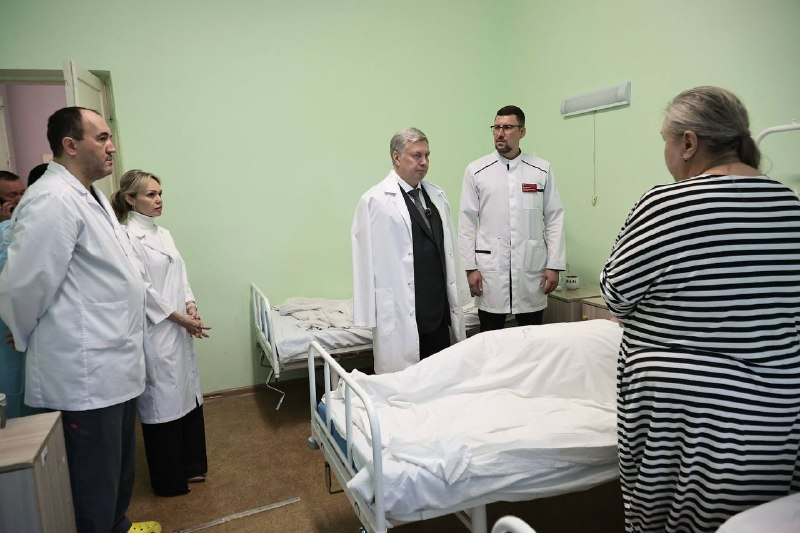

01
Здравоохранение · событие дня
▫️ 15 человек пострадали, наши врачи с раннего утра оказывают всю необходимую медицинскую помощь
Четыре человека госпитализированы с осколочными ранениями, ушибами и переломами. Состояние оценивается как средней степени тяжести, тяжелых случаев нет. Еще 11 человек получили помощь в амбулаторных условиях — пациентам обработали раны и наложили повязки.…